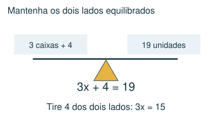
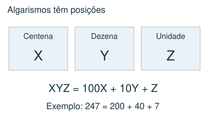
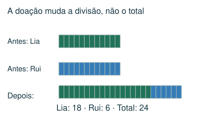
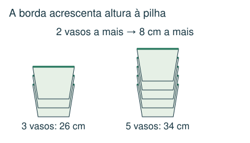

1 Intermediário
Duas pessoas têm a mesma quantidade de figurinhas. Uma doa 8 à outra, que passa a ter o triplo da quantidade da primeira. Quantas cada pessoa tinha antes?
- A) 16
- B) 8
- C) 24
- D) 32
Meu raciocínio
CAPÍTULO 07 · MATEMÁTICA · 6º ANO
Usar desenhos, tentativas organizadas e igualdades.
1. Observe → 2. Entenda → 3. Resolva → 4. Confira
OBSERVE E COMPREENDA · 1

Se uma quantidade é desconhecida, chame-a de x ou desenhe uma caixa. “O triplo de um número mais 4 é 19” vira 3x + 4 = 19. Desfaça as operações na ordem inversa: subtraia 4 e divida por 3. Também é possível usar barras de tamanhos iguais.
Se duas pessoas têm x objetos e uma doa 6 à outra, ficam com x − 6 e x + 6. O total continua 2x. Se a segunda passa a ter o triplo da primeira, escreva x + 6 = 3(x − 6). Não confunda “o triplo” com “três a mais”.
A diferença entre as idades de duas pessoas não muda com o tempo. Se a diferença é 20 e a pessoa mais velha tem o dobro da idade da mais nova, esta tem 20 e aquela 40. Em problemas com irmãos, cada pessoa não conta a si mesma: com h meninos e m meninas, um menino tem h − 1 irmãos.
OBSERVE E COMPREENDA · 2

Um vaso sozinho tem altura H; cada vaso encaixado acrescenta b. Uma pilha de n vasos tem H + (n − 1)b. Subtraia as alturas de duas pilhas para descobrir b. Em pacotes de doces, subtraia duas ofertas para eliminar itens iguais; depois encontre o preço de cada tipo.
Na soma ou multiplicação com letras, cada letra representa um algarismo. Use valor posicional, contas por coluna e os “vai um”. O primeiro algarismo de um número não pode ser zero. Letras diferentes só precisam ter valores distintos se isso for exigido. Teste a solução na conta original.
VAMOS RESOLVER JUNTOS · 1
Lia e Rui têm a mesma quantidade. Rui doa 6 a Lia, que fica com o triplo de Rui. Quanto cada um tinha?

x + 6 = 3(x − 6). Então x + 6 = 3x − 18; 24 = 2x; x = 12. Depois da doação: 18 e 6.
VAMOS RESOLVER JUNTOS · 2
Uma pilha de 3 vasos mede 26 cm e uma de 5 vasos mede 34 cm. Qual a altura de um vaso?

Dois vasos extras acrescentam 8 cm, então cada borda acrescenta 4 cm. H + 2 × 4 = 26; H = 18 cm.
AGORA É COM VOCÊ
Registre suas contas no caderno ou imprima esta página. Explique como chegou à resposta.
Duas pessoas têm a mesma quantidade de figurinhas. Uma doa 8 à outra, que passa a ter o triplo da quantidade da primeira. Quantas cada pessoa tinha antes?
Um pai é 24 anos mais velho que a filha. Qual será a idade do pai quando ele tiver o dobro da idade dela?
Uma pilha de 3 vasos encaixados mede 30 cm e uma de 7 vasos mede 46 cm. Os vasos são idênticos e cada novo vaso acrescenta a mesma altura. Quanto mede um vaso sozinho?
Uma eleição teve 44 votos, todos válidos, para três candidatos. O último recebeu 4 votos; o vencedor recebeu o triplo dos votos do segundo. Quantos votos teve o vencedor?
Um casal tem meninos e meninas. Cada menino tem tantos irmãos quanto irmãs. Cada menina tem o dobro de irmãos em relação às irmãs. Quantos filhos o casal tem ao todo?
CONFERIR TAMBÉM É APRENDER
Abra cada resposta depois de tentar resolver.
A) 16. Se cada uma tinha x, ficam x − 8 e x + 8. x + 8 = 3x − 24; 32 = 2x; x = 16.
D) 48 anos. Se a filha tem x, o pai tem x + 24. Na ocasião, x + 24 = 2x, então x = 24 e o pai tem 48.
C) 22 cm. Quatro vasos extras acrescentam 16 cm: cada um acrescenta 4 cm. H + 2 × 4 = 30; H = 22.
B) 30. Restam 40 votos para primeiro e segundo. São 4 partes iguais: 3 do primeiro e 1 do segundo. Cada parte vale 10; vencedor: 30.
A) 7. Com h meninos e m meninas: h − 1 = m e h = 2(m − 1). Resulta m = 3 e h = 4. Total 7.
Estas questões originais trabalham o tópico. Os recortes incluem resoluções publicadas.